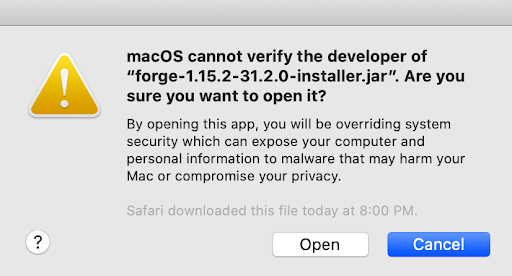

Client Setup Guide
Imperial VPN
To connect to the Minecraft server and the Mumble server you need to be on the Imperial network.
So if you are not on Imperial's Campus, make sure you are connected to the imperial VPN!
If you have not got it setup already you can find all the information on how to set it up
here
Minecraft Setup
Installation
- Go to the Offical Minecraft Downloads
- Download the correct Minecraft launcher for your operating system.
- Open the launcher and enter your credentials.
Joining the world without Mumble (Voice chat)
It is important to follow these steps to join the server since the server is run on an older version of Minecraft (1.15.2).
Starting the game without selecting the correct version of Minecraft will prohibit you from joining the server.
- Open the Minecraft launcher but do not press play.
- Click on the Installations tab at the top and create a installation by clicking new.
- Choose a name for your installation and in the version tab choose release 1.15.2 from the drop down.
- Click on “create” and go back to the play tab.
- At the bottom center, select the server you just created and press play.
- The launcher will close and a new game window will open.
- On the Minecraft home screen select multiplayer.
- To add a new server click Direct Connect and enter the server address. It will be in the format IPaddress:port (eg. 123.123.123.123:25565).
- Finally connect to the server by clicking Join Server.
Joining the world with Mumble
Follow all the installation sections below then return here once done·
- Open the Minecraft launcher, in the version box on the left of the Play button it should say Minercaft forge 1.15.2 if not select this verison from the drop down.
- Start the Mumble client and connect to the Mumble server with the right address and port number.
- Press Play in the Minecraft launcher and the Minercaft Forge game window will load, it usually takes a little longer than starting an normal verison of minecraft since it is modded.
- Once on the home screen you can connect to the server as normal. When you join the Minercaft server in the Mumble client window it should say Minecraft linked.
Mumble
To install Mumble follow the install Mumble steps (not Mumble-server) on the Mumble wiki here.
MumbleLink and Forge
To link Minecraft to Mumble so that we can use 3D positional audio, we need to install Forge a Minecraft modding API and Mumblelink the mod that links Minercaft to Mumble.
Forge
- Download Minecraft Forge 1.15.2 here.
- Run the .jar
Ubuntu
- Find the download in your terminal.
- Run command “java -jar file_name.jar”
Windows
- Find the download in file explorer.
- Right-click on the .jar (make sure you have java).
- Then “Open with” and select Java.
Mac
- A window will open, keep the "Install Client" box ticked.
- Click install and wait for it to finish.
- Download Mumblelink 1.15.2 here.
- Move the download .jar into the mods folder of your minecraft directory.
where is my minecraft directory?
- Launch minecraft and make sure the forge 1.15.2 version is selected next to the play button
Mac Forge Installtion
- Double click the forge jar file
- The following window might appear (if not, go to 4 directly)
- Run it from settings
Go to security & privacy
Go to general and click open anyway

Click open
- Install the forge client
The following window appears once the installation is completed
- Download Mumblelink 1.15.2 here.
- Finally we will add the mod. Press CMD + SHIFT + G and paste ~/Library/Application Support/minecraft/mods
- Paste the Mumblelink mod in that folder. You’re good to go using mumble positional audio chat in the virtual environment!